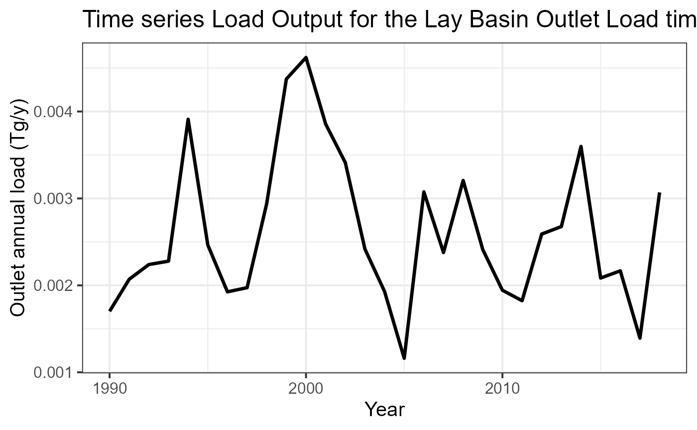

Creates a time series plot showing basin model results
Arguments
- green_file
data frame. Nutrient Load by source apportionment of nutrient for each year and catchments.
- basin_name
character. The title of the plot.
- plot.type
character. Alternative of the plot: output load (t) by source; gr1: Basin average by Shreve (t/y/km2); gr2: Outlet total (kt/y).
- file_path
character. The path to save the csv.
Examples
# \donttest{
# the data of the TN scenario
data(catch_data_TN)
data(annual_data_TN)
data(sh_file)
# the parameter to assess the basin model
alpha_p <- 35.09
alpha_l <- 0.02
sd_coef <- 0.2
# years in which the model should be executed
loc_years <- 1990:2018
# Computing the source apportionment
basin_sa <- green_shares(catch_data_TN, annual_data_TN, alpha_p, alpha_l,
sd_coef, loc_years)
# The title of the plot
plotTitle <- "Time series Load Output for the Lay Basin"
# Output Load Basin average time series (lines)
nutrient_tserie(basin_sa, basin_name = plotTitle, plot.type = "gr1")

#> Year Atm Fix Man Min Ps Sd Soil
#> 1 1990 190.9303 64.61898 474.8575 624.3903 255.4712 44.33087 46.82202
#> 2 1991 233.4380 83.09805 584.6387 814.1589 249.4621 45.01517 60.65587
#> 3 1992 256.7513 93.20258 687.3130 846.0203 243.4458 45.69655 67.34432
#> 4 1993 277.6698 100.70950 697.4262 844.8723 237.4334 46.38032 74.02251
#> 5 1994 473.8071 186.56647 1304.1032 1531.7324 231.4249 47.06442 136.09767
#> 6 1995 293.2375 105.37582 810.7215 903.7920 225.4138 47.74760 78.49564
#> 7 1996 220.1218 75.30828 599.8602 693.2554 233.4236 48.44145 55.43695
#> 8 1997 224.6186 83.66444 559.7981 757.9870 241.4201 49.13526 56.80359
#> 9 1998 329.5553 136.14534 865.5247 1221.2161 249.4346 49.82964 90.23738
#> 10 1999 499.5698 209.72768 1292.9584 1920.0479 257.4505 50.52356 143.47260
#> 11 2000 512.0912 220.39846 1285.7432 2139.1872 265.4517 51.21752 147.25629
#> 12 2001 415.5335 195.08910 1027.4101 1781.9948 261.5031 50.41715 124.46726
#> 13 2002 387.7962 170.65501 978.4117 1458.5322 257.5638 49.61568 109.85922
#> 14 2003 256.8299 120.24828 683.6318 979.4918 253.6106 48.81571 75.02860
#> 15 2004 206.9679 87.24304 526.1731 754.1731 249.6677 48.01440 57.05662
#> 16 2005 119.2931 45.03963 285.6801 387.7327 245.7161 47.21465 30.60369
#> 17 2006 366.3896 154.33610 1020.7236 1142.1734 239.8409 48.44384 103.66118
#> 18 2007 280.8776 93.93667 767.9862 872.3763 233.9561 49.67149 78.82357
#> 19 2008 336.6969 131.26730 1123.8435 1224.6232 228.0761 50.89926 111.49963
#> 20 2009 260.7587 111.15214 922.7750 760.2566 222.1981 52.12831 81.71997
#> 21 2010 204.9590 96.65786 676.0391 634.3326 216.3180 53.35651 62.03141
#> 22 2011 187.8603 66.43987 623.4805 628.0557 210.3823 48.67945 58.65184
#> 23 2012 243.0171 98.11778 865.7319 1047.8678 204.4463 44.00271 87.51578
#> 24 2013 307.0959 102.10793 930.4720 1007.9247 198.5181 39.32700 91.03359
#> 25 2014 363.9363 143.12927 1158.6136 1575.4699 192.5796 34.65051 129.95801
#> 26 2015 212.4315 80.42483 711.9735 795.6660 186.6495 29.97384 67.16703
#> 27 2016 199.9961 85.58774 757.6744 846.7398 180.7148 25.29609 71.37241
#> 28 2017 126.5836 49.76132 563.6101 405.7957 180.7148 25.29609 41.44752
#> 29 2018 318.1283 119.42053 1352.5877 973.8548 180.7148 25.29609 99.46842
#> CatchLoad
#> 1 1701.421
#> 2 2070.467
#> 3 2239.774
#> 4 2278.514
#> 5 3910.796
#> 6 2464.784
#> 7 1925.848
#> 8 1973.427
#> 9 2941.943
#> 10 4373.750
#> 11 4621.346
#> 12 3856.415
#> 13 3412.434
#> 14 2417.657
#> 15 1929.296
#> 16 1161.280
#> 17 3075.569
#> 18 2377.628
#> 19 3206.906
#> 20 2410.989
#> 21 1943.695
#> 22 1823.550
#> 23 2590.699
#> 24 2676.479
#> 25 3598.337
#> 26 2084.286
#> 27 2167.381
#> 28 1393.209
#> 29 3069.471
# Total Load in the Basin Outlet time series (lines)
nutrient_tserie(basin_sa, basin_name = plotTitle, plot.type = "gr2")
#> Year Atm Fix Man Min Ps Sd Soil
#> 1 1990 190.9303 64.61898 474.8575 624.3903 255.4712 44.33087 46.82202
#> 2 1991 233.4380 83.09805 584.6387 814.1589 249.4621 45.01517 60.65587
#> 3 1992 256.7513 93.20258 687.3130 846.0203 243.4458 45.69655 67.34432
#> 4 1993 277.6698 100.70950 697.4262 844.8723 237.4334 46.38032 74.02251
#> 5 1994 473.8071 186.56647 1304.1032 1531.7324 231.4249 47.06442 136.09767
#> 6 1995 293.2375 105.37582 810.7215 903.7920 225.4138 47.74760 78.49564
#> 7 1996 220.1218 75.30828 599.8602 693.2554 233.4236 48.44145 55.43695
#> 8 1997 224.6186 83.66444 559.7981 757.9870 241.4201 49.13526 56.80359
#> 9 1998 329.5553 136.14534 865.5247 1221.2161 249.4346 49.82964 90.23738
#> 10 1999 499.5698 209.72768 1292.9584 1920.0479 257.4505 50.52356 143.47260
#> 11 2000 512.0912 220.39846 1285.7432 2139.1872 265.4517 51.21752 147.25629
#> 12 2001 415.5335 195.08910 1027.4101 1781.9948 261.5031 50.41715 124.46726
#> 13 2002 387.7962 170.65501 978.4117 1458.5322 257.5638 49.61568 109.85922
#> 14 2003 256.8299 120.24828 683.6318 979.4918 253.6106 48.81571 75.02860
#> 15 2004 206.9679 87.24304 526.1731 754.1731 249.6677 48.01440 57.05662
#> 16 2005 119.2931 45.03963 285.6801 387.7327 245.7161 47.21465 30.60369
#> 17 2006 366.3896 154.33610 1020.7236 1142.1734 239.8409 48.44384 103.66118
#> 18 2007 280.8776 93.93667 767.9862 872.3763 233.9561 49.67149 78.82357
#> 19 2008 336.6969 131.26730 1123.8435 1224.6232 228.0761 50.89926 111.49963
#> 20 2009 260.7587 111.15214 922.7750 760.2566 222.1981 52.12831 81.71997
#> 21 2010 204.9590 96.65786 676.0391 634.3326 216.3180 53.35651 62.03141
#> 22 2011 187.8603 66.43987 623.4805 628.0557 210.3823 48.67945 58.65184
#> 23 2012 243.0171 98.11778 865.7319 1047.8678 204.4463 44.00271 87.51578
#> 24 2013 307.0959 102.10793 930.4720 1007.9247 198.5181 39.32700 91.03359
#> 25 2014 363.9363 143.12927 1158.6136 1575.4699 192.5796 34.65051 129.95801
#> 26 2015 212.4315 80.42483 711.9735 795.6660 186.6495 29.97384 67.16703
#> 27 2016 199.9961 85.58774 757.6744 846.7398 180.7148 25.29609 71.37241
#> 28 2017 126.5836 49.76132 563.6101 405.7957 180.7148 25.29609 41.44752
#> 29 2018 318.1283 119.42053 1352.5877 973.8548 180.7148 25.29609 99.46842
#> CatchLoad
#> 1 1701.421
#> 2 2070.467
#> 3 2239.774
#> 4 2278.514
#> 5 3910.796
#> 6 2464.784
#> 7 1925.848
#> 8 1973.427
#> 9 2941.943
#> 10 4373.750
#> 11 4621.346
#> 12 3856.415
#> 13 3412.434
#> 14 2417.657
#> 15 1929.296
#> 16 1161.280
#> 17 3075.569
#> 18 2377.628
#> 19 3206.906
#> 20 2410.989
#> 21 1943.695
#> 22 1823.550
#> 23 2590.699
#> 24 2676.479
#> 25 3598.337
#> 26 2084.286
#> 27 2167.381
#> 28 1393.209
#> 29 3069.471
# }